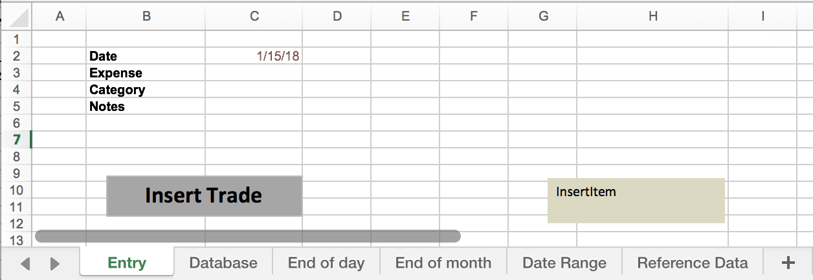

By now, you should have a list of places and things your money goes towards - a bunch of categories that you will turn into your living budget.
That's great, but now what?
Well, the purpose of creating the budget in the first place is so that we can have an input to the equation of how many points we will need to stash for day-to-day living.
This is really important. Your budget is being created for a purpose. Don't lose sight of that purpose by getting distracted in the world of comparing everything to try to find the best budgeting software out there. Unless of course the thing you set out to do is compare the budgeting softwares of the world.
For me, because I'm planning to take an unpaid leave of absence for three months, I need to figure out how much I spend each month. Once my budget can tell me this number, I'll multiply by three, add in any other things I'll need to get, and then set this as my target amount for Goal 2.
So, you might be wondering where the best place to keep your budget is. We'll talk about that and some other commonly pressing budgeting questions in this post.
Where should you keep your budget?
The short answer: whatever works for you.
Yea, I know that's a shitty answer, but it's the best one I can give. There are plenty of budgeting tools out there that one is bound to suit your needs: Quicken, Mint, YNAB, Excel, Word, peice of paper...
Just pick one of them.
But which one do you pick? Which one is the best?
As long as you are not going to try to build it yourself, it doesn't fucking matter. A budgeting software is just glorified Excel at the end of the day. That's all it is.
I have a few humble suggestions for choosing the 'right' place to keep your budget:
-
Don't get stuck on the research hamster wheel
As I said, there are a gazillion different ways you can go about making up budget, and the same number of software products out there.Subscribe to the Just Pick One mentality and just pick one. The decision you make here is largely irrelevant.
If you make the wrong decision, you can always change your mind and go for something better. You might not even know what you want your budgeting software to do until after you have started budgeting.
Don't even worry about cost. I'll explain why later. If you don't have $100 to spend on something that is going to make a big difference in your life right now, you shouldn't even be here. You should leave this page and come back when you are ready to move forward.
When I started my 2016 budget, I took the DIY approach, which brings me to my second suggestion:
-
Don't push a square wheel
Just like me, you might have a tendency to want to create and use your own things. When I first decided to start budgeting, I created an Excel spreadsheet using VBA to enter transactions and run daily, monthly, and time-bound reports. Beats a $90 product, lolThis was the worst budgeting software I've ever used. The product specifications were:
- Retain receipts from purchase. If a receipt is not provided, note the date, amount, and expense category of transaction. For pre-authorized reoccuring transations, remember when they happened and how much.
- To add a transaction to the database, enter the transation details and click 'Insert Trade'. To edit an expense, open the database and edit the entry. Text entered outside of the entry boxes will not be processed.
- Database does not auto-save. File > Save the budget every often to prevent data loss.
- New features available based on how much effort you'd like to put into developing more features.
- Data import crudely supported by copy/paste functionality.
- Take your budget with you by keeping it on a portable flash drive or cloud collaboration software (not provided).
- Not available on mobile.
Expense_Tracker.xlsm allows you to consolidate all of your transaction data into one centralized location so you can can track your spending and calculate how many points you need to in order to take three months off work.
Follow the below instructions to use Expense_Tracker.xlsm -
Free isn't always the best
If you're not already convinced that trying to do this with your own version of Expense_Tracker.xlsm is a horrible idea, I'm not much sure what else to tell you.There are several free softwares out there that attempt to throw some automation (sometimes too much) in the mix to make your life easier. Heck, some even allow you to pay all of your bills in one place with a bill-pay service and view your credit score.
You have a lot of options. I repeat, there are A LOT of options out there. I use and have used several, but today I just use two.
It's not the one that I use, but one of the most common ones that comes up is Mint.
I have had a Mint account ever since college, but never really properly got into the workflow of using it. Recently I tried to bring it back to life to do a side-by-side comparison of it with YNAB, thinking that I might save a few bucks and switch if it works just the same. I will post my comparison in a future post.
Needless to say, I didn't switch. I don't like the way that Mint tries to categorize everything for you because it's often wrong, and I needed to correct things so often that it was more tedious to use than YNAB. Recording cash transactions was also tricky.
In my case, free wasn't best because (1) I had already been using YNAB for a while, (2) knew how to use it, (3) didn't want to have to re-architect an already working solution to get the same end result.
That third point is important. Think about it: If two products do the same thing, what's the difference which one you use? At the end of the day, you want your budget to tell you a number. If it can do that in a way that keeps the hair on your head, great! That's all you need.
For you, it may even be Expense_Tracker.xlsm! But in this day and age, I highly doubt that.
Here, I'll even give you a few names to get started on your research:
- Mint
- YNAB
- Moneyspire
- Personal Capital
- Quicken
- The list goes on and on forever...
- Here's another bunch of reviews
If you do extensive research on each of your options to try to find the best one, you'll never get to actually start using one, and you won't know what you actually want. Solve the chicken and egg problem by buying an egg. Once you do, you might find that you hate it. That's ok, simply start over with another one.
A good way to kick yourself in the butt is to sign up for a paid one that has a free trial.
I'm guessing most will let you try their stuff out for at least one month because that's how long it takes to get any results you can start working with.
If, at the end of the trial period, you just can't stand using it because it's so shitty, then cancel and try something else. Don't feel bad to tell someone you didn't like their product.
If it works for you, keep using it. And know that the points you traded for it have already come back.
You see, free isn't always best because you don't get a free trial with free.
-
Make more progress faster by learning from other people's experiences
The reason that humanity has been able to come this far is that people have encapsulated their knowledge in such a way that another person can obtain the same knowledge in a fraction of the time, or use the knowledge without fully understanding it.I certainly wish that someone would have laid out exatly what I needed to to at the beginning of 2016 when I did this for the first time. It would have saved me so much time and frustration. I never would have convinced myself that Expense_Tracker.xlsm was a good idea.
The point to drive home here is that it does not matter which budgeting software you use. I use YNAB, but you don't have to. They all do the same thing at the end of the day. Your purpose is not to determine what is the best budgeting software there is out there. Let this guy worry about that.
You could help him out by telling him which one you chose.
Don't tell me though. I don't really care. My question will be the same no matter what you choose.
Although, if you do choose YNAB, It would be easier for me to help you out because I use the software myself. Some images I use will be of the YNAB software. I could even help you out with the software.
But probably won't because they make it pretty straightforward.
An their support is pretty top-tier
I mean, basically what you're getting is a really, really advanced version of Expense_Tracker.xlsm.
Jesus. What was I thinking???
Looking back at it now, I can't even... How was I able to record my expenses like that for almost a month? One of the things I absolutely hate doing is saving receipts from my purchases. Why would I ever need to prove to someone I bought groceries? They're going to be gone soon!
Throw that shit away.
What you should do for this step
Pick a place to keep your budget. Do it before you get off the computer and get it setup with the items from the last step. And connect your accounts.
Put aside one or two hours to complete the setup.
After you've done that, go to the next step.
In this part, I'll talk about my budget. Feel free to skip this part.
I'm not going to give any more budget-picking advice. You already know what you need to do before going on to the next step. The following will be me reflecting on experience budgeting.
I told you earlier that I was excited about my new budget categories, that I'm now using the budget for things just beyond expense tracking.
Before we go there though, let me show you what I've been doing and some of the problems I've found with it. I'll show you the categories I've been using for the past two years to explain my reasoning for my new categories.
As you look through the categories, you'll see that some are very specific. There is no need for things to be so specific. I even made some categories that I didn't even use. That's way too specific.
Your budget will force you to see a lot of things, whether you want to see them or not. A good budget is the opposite of a facebook feed. Even two years into budgeting, I wonder what the hell I were thinking when I thought I had it all figured out.
A good example of this is if you own a car. A car is an entire group of categories in itself. There are a bunch of under-the-hood costs of owning a car that a budget will force you to see.
You'll notice that I don't have the rent expense. For the time I've been budgeting, I've been living at home. Looking back, moving back home for a time was probably the best decision I made, for reasons other than economic.
It's interesting to see that the yearly totals are so different for some categories, and nearly the same for others. Groceries increased by more than the amount that dining out decreased. What sense does that make? Misc transport, going out, entertainment, and relaxing are similar, which make them good candidates to add a spin to.
The TTM Average column shows the average amount I've spent in that category in the past twelve months. In this case, that would be the average spend per month in 2017.
Ok, here come the dumber categories. Here we have the ones that are too specific. I didn't even buy any vitamins or honey or computer.
I also broke up most of my subscriptions into the specific thing of what they are. That had to go.
Cashback was included as its own category. There were expenses incurred in getting the cashback, so I used the budget to track the amount of net cashback I was getting. Since it lowers the total below true spending, and because I'm not likely to keep up the work that is needed to get the $300-400 yearly cashback, it should be in a non-tracked category.
Overall, my total spending for 2016 came in just above my forecast of $21 000. 1
I set a lower number in 2017 to account for the loss of long-car-commute expenses, and came in nearly $3 000 below. Pretty nice!
I don't there will ever be another year where I spend below what I spent in 2017. Consider it the best year on record.
Ok, on to the new budget.
There are a few things that I thought about while figuring out my new categories:
-
I don't really 'budget' anymore.
Several months ago I made an error that recategorized all transactions within a certain account to 'Dining Out.' My options were to go back and fix each transaction by reassigning it to the right category or just keep going on, knowing that the numbers in the AVAILABLE column were wrong.What do I look like?Being lazy taught me something useful about myself: I think about money differently than I did two years ago and my spending habits reflect that. I don't think twice about spending in areas that are important to me, and have cut back relentlessly on things that didn't add any value to my life.
A great example of this is my online shopping habit. When I reviewed all of the purchases I had ever made on Amazon, I found that before I started really thinking about what I was doing with my money, I would just buy all sorts of random shit.
Every time I was about to make a purchase, I would ask myself a series of very simple questions.
Why do I want this thing?
I have a goal. There's this thing I want to get. Is this thing more important than my goal? Will this thing help me reach my goal quicker?
If I had to choose one, would it be my goal or this thing?
-
Increase impact of time spent in application through simplification
Putting a number in each row of the BUDGETED category takes an amount of time. It's not much time, but it is time nonetheless.I could use the auto-budget feature. That will take what I spent last month and apply it to this month's budget, but I don' think I'll do that either.
I haven't been really using the memo feature of YNAB, so I will start using that as it is a useful thing to have filled out for retroactive analysis.
Living without stuff applies to the budget as well. Anything that I can live without in my budget will go. As I said above, at the end of the day, the buget is a simple tool that you use to get a number that you use for other things.
But does it have to stop there?
-
Do more with the budget
I now want my budget to tell me more things. I think I can do this by getting creative in the way that I use it.Of course, categories that can logically be joined together will be joined together, like all of my subscriptions. But there are other categories that I have put together, like 'Entertainment', 'Dining out', and 'Going out'.
It might seem weird to bunch all of those together, but it is my attempt at making my budget do more for me than simply spit out a number of how much I spent last month.
I can use my budget to track how different things make me feel.
Here is my new budget:
These might seem like very subjective categories. What is a 'Good times > With friends'? What about 'Good times > Ehh wasn't that great'? What's that?
Those are good questions. I'll get back to you with the answer after a few months.
I wanted to make my new budget more meaningful beyond simply keeping track of numbers. In my last budget, I created a bunch of categories I never even used. Having more categories doesn't necessarily make it better.
In accordance with the goal of simplification, I also thought about ways to reduce the total number of categories.
One idea was to categorize things by the feeling they produced instead of what it was. You could call this a derivative category. For example, 'Dining out' can be put into one of the categories under 'Good times'.
What is a 'Good times' you ask? I don't know, you tell me! If you go out to eat with a group of friends, is that a good time? If it wasn't you can put it under 'Ehh wasn't that great' and write why in the memo field.
The budget records more than just numbers now.
I'm also not going to be using the budgeting feature. I'm not trying to predict how much I'll spend. Right now I just want to measure it so I can input the value into the Goal 2 calculation.
Guys, I swear, this is just like a really long math problem. If you do good on it, you get an A in life.
There are a few things that I am really excited with about this budget.
-
The 'Sleep late' category
I have a category for going to sleep late? What does that mean? Well, If I go to sleep too late that I get out of bed in response to my alarm going off, I pay for that priviledge. Hmm, when I describe it that way, it sould kind of like a sacrifice to the alarm clock god.Alarm Clock God: known for his extraordinary abiliy of post-alarm wake-ups.So, what's gonna happen?
Well, one of the things that I know I need is enough sleep. I consider enough if I can go to bed, get up and feel well-rested, without having to get up for something (like your alarm). If I have to get up in response to my alarm, I'm more likely to be in robot mode because I'll have to do a bunch of stuff.
Where does the money go?
Somewhere.
And I have to make it go somewhere the next day.
Whoa, it's almost like resolving the curse of have to.
I've stayed up late already two times on the new budget. The first ten went to a guy standing outside the train station asking for money. He bought a train ticket with the money.
The second time, it went into the mailbox. I suppose that will be my last resort.
I'm probably going to be paying for tonight too...
I am building the habit of going to sleep earlier and waking up without an alarm. This category is my attempt at doing this.
-
'Ehh wasn't that great' and 'Hmm not that important'
Sometimes, the things that I choose to do aren't really that fun. I want to get better at figuring out whether I want to do a certain thing. This one will force me ask myself if I would want to do the thing I just did again. If not, they go into this category.Goes for thing I buy too, but I'm not sure how well. If I buy an item, most likely I will be classifying it before I even get it, or right after I use it, so it would by default be an important item in my mind.
Questions
How do you categorize between housing things like furniture, a blender, a toaster, paper towels, paper plates?
Well, what do you use them for? These items are useful, so there should be a category you can find for them.
I would do this:
furniture → Household items
blender, toaster → Food
paper towers, paper plates → Good times
I put the blender and toaster into 'Food' because they help in the preparation of food, a thing necessary for survival. It makes sense to me then that any items that help in the preparation of food should go under 'Food'.
Should I have a category called Verizon? I realize that I might swithch phone plans later and change the category name, and then it would be difficult to compare to AT&T.
Absolutely right. A phone plan is something that I subscribe to, so for me it goes under 'subscriptions'. If I change my phone plan to something else, the category stays the same.
What about categories that you don't regularly use? Like furniture, new computer - do you just create them when you need them?
Those are big purchases that don't happen very often, but they do happen. Part of why the budget is useful is because it helps you capture several points in time so you can easily find average values. If you create a category for 'Laptop' and only have one purchase in it, is that a good category? I think it can be, because averaged out over the other periods for which there were laptop purchases, you get a monthly average. On the other hand, the category will only have one entry in it every 2-3 years. Although most budgeting softwares let you hide categories, hiding something reduces its intentionality. You may want to create and fund a separate savings account for infrequent big ticket items like a new computer and moving expenses (We'll go over accounts in a later step).
In my new budget, I would put a new computer in 'Important > Purchases'.
What do you do with reimbursable expenses?
They go into 'Do Not Track' along with cashback. If you use your own card for work-related expenses, those transactions will show up in your budget. You can hide categories that you don't want to see in calculations or reports. Reimbursable work do not add value to a personal budget.
You can also just delete them, but that just sounds scary (and YNAB will sometimes re-import a deleted transaction if it was recent enough).
1. after cashback and project proceeds (go back)